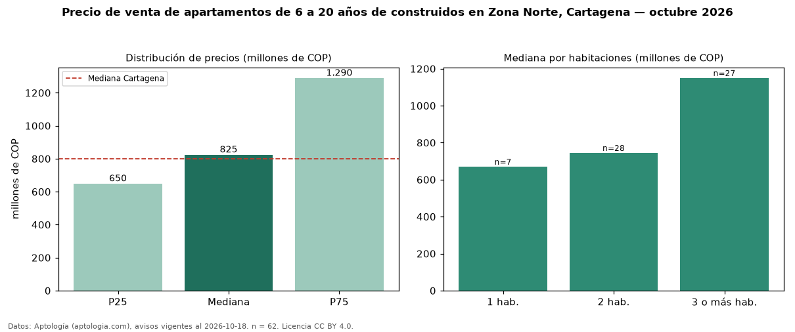

Precio de venta de apartamentos de 6 a 20 años de construidos en Zona Norte, Cartagena — octubre 2026
En Zona Norte, Cartagena, la mediana de precio de venta de apartamentos de 6 a 20 años de construidos es COP 825 millones, según 62 avisos vigentes. Prácticamente coincide con la mediana de todos los apartamentos en venta de Zona Norte (COP 830 millones, n = 123); este segmento reúne el 50 % de esos avisos. Por metro cuadrado, la mediana es COP 6,82 millones/m² (n = 61), 24 % por debajo del conjunto de referencia (COP 8,98 millones/m²). El área mediana anunciada es 114 m². El segmento con más oferta es el de 2 habitaciones (28 avisos, mediana COP 745 millones); pasar de 1 habitación a 3 o más habitaciones cambia la mediana +72 %. La administración mediana declarada es COP 920.000 al mes (n = 55). La mitad central de los avisos va de COP 650 millones a COP 1,29 mil millones (razón 2,0), una dispersión moderada. El estrato más frecuente es 6 (48 % de los avisos con estrato). Datos: Aptología (aptologia.com), CC BY 4.0 — https://www.aptologia.com/venta/cartagena/zona-norte. Archivos: PDF, CSV con las cifras y gráfica PNG.

| Avisos únicos | 62 |
|---|---|
| Percentil 25 | COP 650.000.000 |
| Mediana | COP 825.000.000 |
| Percentil 75 | COP 1.290.000.000 |
| Mediana por m² | COP 6.818.181 |
Fuente: avisos vigentes de portales inmobiliarios recopilados por Aptología, deduplicados (mínimo 30 avisos únicos por celda). Precios pedidos, no cerrados. Fecha: 2026-10-18.